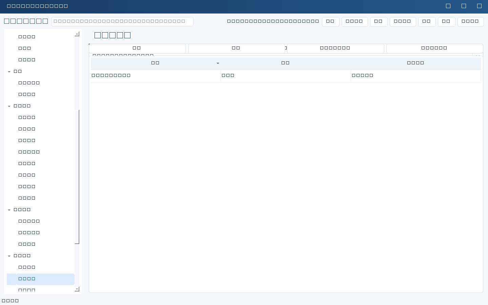

在“通知渠道”新建，填写名称、类型和启用状态；凭据字段填引用名称而不是秘密值。完整Webhook URL视为密钥。先配置服务端环境变量或DPAPI凭据，再点“发送测试消息”：该操作会真实发消息，不是仅检查格式。
| 类型 | 字段与允许地址 |
|---|---|
| wecom 企业微信 | webhook_env；HTTPS域名qyapi.weixin.qq.com，路径/cgi-bin/webhook/send。不要填secret_env。 |
| feishu 飞书/Lark | webhook_env；可选secret_env签名密钥。域名open.feishu.cn或open.larksuite.com，路径/open-apis/bot/v2/hook/…。 |
| dingtalk 钉钉 | webhook_env；可选secret_env。域名oapi.dingtalk.com，路径/robot/send；按机器人安全配置使用签名。 |
Webhook只发文本，不支持附件、个人消息、回调或通讯录同步。拒绝非官方地址、HTTP和重定向；请按平台管理端要求配置IP白名单、签名或关键词。平台业务返回错误并不等于HTTP发送成功。
SMTP字段
| 字段 | 填写方式 |
|---|---|
| type | |
| host / port | 邮件服务商SMTP主机；ssl常用465、starttls常用587，以管理员配置为准。 |
| security | ssl或starttls，验证TLS证书，不降级明文。 |
| username_env / password_env | 用户名及密码/授权码的服务端引用，必须成对配置；仅受控免认证中继时可都不填。 |
| from_addr | 裸邮箱地址，需具备发信权限。 |
| to_addrs | 界面逗号分隔的明确收件地址；配置存为列表，不从人员台账自动推断群发范围。 |
| timeout | 适配器默认10秒，上限60秒；GUI未必提供此字段。 |
不支持显示名式地址、换行或头部注入；SMTP仅发送，不收邮件、不监测回执、不将回复转任务。仅邮件支持附件；适配器上限20个、单件10MiB、总原始字节20MiB，邮件商限制可能更低。
安全引用示例
Webhook凭据引用：ITM_SECRET_WECOM_HOOK 签名凭据引用：ITM_SECRET_FEISHU_SIGN SMTP用户名引用：ITM_SECRET_SMTP_USER SMTP密码引用：ITM_SECRET_SMTP_PASS
这些只是变量名，不是预置凭据。GUI按渠道类型仅显示适用字段：机器人不显示SMTP设置，邮件不显示Webhook。切换类型时保留临时输入，但保存只提交当前类型字段；SMTP端口和加密方式需配套。真实外部联调尚未执行；先使用授权测试群/测试邮箱验证。

